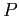
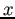

Generalmente los puntos del espacio están expresados en un sistema de coordenadas denominado ``Global''. Este sistema y el sistema de coordenadas de la cámara están relacionados mediante una rotación y una traslación como se puede observar en el esquema de la Fig. 2.16. Sea:
-
un vector de 3 dimensiones no homogéneo que representa las coordenadas de un punto en el sistema de coordenadas global,
-
el mismo punto, pero en el sistema de coordenadas de la cámara,
-
las coordenadas del centro de la cámara en el sistema global y,
 la matriz de rotación de
la matriz de rotación de
 que representa la orientación del sistema de coordenadas de la cámara,
que representa la orientación del sistema de coordenadas de la cámara,
se puede escribir:
que en coordenadas homogéneas se puede expresar como:
y combinado con la expresión 2.19, resulta en
que es la ecuación general de mapeo para el modelo de cámara oscura, donde
 está expresado en coordenadas globales.
está expresado en coordenadas globales.
Figura:
Esquema de transformación euclÃdea entre el sistema de coordenadas globales y el de la cámara. (Figura adaptada de ()).
|
|
La ecuación (2.21) tiene 9 grados de libertad (9DoF): 3 para 
, 3 para y 3 para
donde los parámetros de son conocidos como parámetros internos de la cámara o intrÃnsecos que resultan constantes para un sistema lente-cámara, mientras que los de y
son denominados externos o extrÃnsecos y relacionan la orientación de la cámara y la posición del sistema de coordenadas global y resultan ser diferentes para diferentes ``puntos de vista''.
Si no se explicita el centro de la cámara, se puede representar la transformación del sistema global al de la imagen como
y la matriz de la cámara puede simplificarse a la expresión:
![$\displaystyle P=K[R\vert\mathbf{t}] \, con \,\,\,\,\, \mathbf{t}=-R \tilde{\mathbf{C}}.$](img202.png) |
(3.22) |
El modelo de la cámara derivado hasta el momento, asume que las coordenadas de las imagen son coordenadas euclÃdeas, que tienen igual escala en ambos ejes direccionales. Sin embargo, esto no siempre es asÃ, ya que los pÃxeles de las cámaras pueden no ser perfectamente cuadrados. Denotando y el número de pÃxeles por unidad de distancia en las direcciones e  respectivamente (en coordenadas del plano imagen), se puede obtener una forma general de la matriz de calibración de la cámara mostrada en 2.23 donde
y
representan la distancia focal de la cámara en término de dimensiones de pÃxeles en la dirección e respectivamente,
 es el punto principal con coordenadas
y
y el parámetro
es el punto principal con coordenadas
y
y el parámetro  representa la distorsión de la cámara.
representa la distorsión de la cámara.
christian
2014-01-31